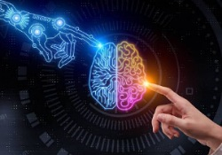

Artificial intelligence
Artificial intelligence (AI) is intelligence demonstrated by machines, unlike the natural intelligence displayed by humans and animals, which involves consciousness and emotionality. The distinction between the former and the latter categories is often revealed by the acronym chosen. 'Strong' AI is usually labelled as artificial general intelligence (AGI) while attempts to emulate 'natural' intelligence have been called artificial biological intelligence (ABI). Leading AI textbooks define the field as the study of "intelligent agents": any device that perceives its environment and takes actions that maximize its chance of achieving its goals.Colloquially, the term "artificial intelligence" is often used to describe machines that mimic "cognitive" functions that humans associate with the human mind, such as "learning" and "problem solving".
As machines become increasingly capable, tasks considered to require "intelligence" are often removed from the definition of AI, a phenomenon known as the AI effect.A quip in Tesler's Theorem says "AI is whatever hasn't been done yet."For instance, optical character recognition is frequently excluded from things considered to be AI,having become a routine technology.Modern machine capabilities generally classified as AI include successfully understanding human speech,competing at the highest level in strategic game systems (such as chess and Go),and also imperfect-information games like poker,self-driving cars, intelligent routing in content delivery networks, and military simulations.
Artificial intelligence was founded as an academic discipline in 1955, and in the years since has experienced several waves 8th optimism, followed by disappointment and the loss of funding (known as an "AI winter"),followed by new approaches, success and renewed funding. After AlphaGo defeated a professional Go player in 2015, artificial intelligence once again attracted widespread global attention.For most of its history, AI research has been divided into sub-fields that often fail to communicate with each other.These sub-fields are based on technical considerations, such as particular goals (e.g. "robotics" or "machine learning"), the use of particular tools ("logic" or artificial neural networks), or deep philosophical differences.Sub-fields have also been based on social factors (particular institutions or the work of particular researchers).
The traditional problems (or goals) of AI research include reasoning, knowledge representation, planning, learning, natural language processing, perception and the ability to move and manipulate objects.AGI is among the field's long-term goals.Approaches include statistical methods, computational intelligence, and traditional symbolic AI. Many tools are used in AI, including versions of search and mathematical optimization, artificial neural networks, and methods based on statistics, probability and economics. The AI field draws upon computer science, information engineering, mathematics, psychology, linguistics, philosophy, and many other fields.
The field was founded on the assumption that human intelligence "can be so precisely described that a machine can be made to simulate it".This raises philosophical arguments about the mind and the ethics of creating artificial beings endowed with human-like intelligence. These issues have been explored by myth, fiction and philosophy since antiquity.Some people also consider AI to be a danger to humanity if it progresses unabated.Others believe that AI, unlike previous technological revolutions, will create a risk of mass unemployment.
In the twenty-first century, AI techniques have experienced a resurgence following concurrent advances in computer rge amounts of data, and theoretical understanding; and AI techniques have become an essential part of the technology industry, helping to solve many challenging problems in computer science, software engineering and operations research.
.jpg)
Artificial intelligence is based on the principle that human intelligence can be defined in a way that a machine can easily mimic it and execute tasks, from the most simple to those that are even more complex. The goals of artificial intelligence include mimicking human cognitive activity. Researchers and developers in the field are making surprisingly rapid strides in mimicking activities such as learning, reasoning, and perception, to the extent that these can be concretely defined. Some believe that innovators may soon be able to develop systems that exceed the capacity of humans to learn or reason out any subject. But others remain skeptical because all cognitive activity is laced with value judgments that are subject to human experience.
WHY THE RECENT INTEREST IN AI SAFETY ?
Stephen Hawking, Elon Musk, Steve Wozniak, Bill Gates, and many other big names in science and technology have recently expressed concern in the media and via open letters about the risks posed by AI, joined by many leading AI researchers. Why is the subject suddenly in the headlines?
The idea that the quest for strong AI would ultimately succeed was long thought of as science fiction, centuries or more away. However, thanks to recent breakthroughs, many AI milestones, which experts viewed as decades away merely five years ago, have now been reached, making many experts take seriously the possibility of superintelligence in our lifetime. While some experts still guess that human-level AI is centuries away, most AI researches at the 2015 Puerto Rico Conference guessed that it would happen before 2060. Since it may take decades to complete the required safety research, it is prudent to start it now.
Because AI has the potential to become more intelligent than any human, we have no surefire way of predicting how it will behave. We can’t use past technological developments as much of a basis because we’ve never created anything that has the ability to, wittingly or unwittingly, outsmart us. The best example of what we could face may be our own evolution. People now control the planet, not because we’re the strongest, fastest or biggest, but because we’re the smartest. If we’re no longer the smartest, are we assured to remain in control?
FLI’s position is that our civilization will flourish as long as we win the race between the growing power of technology and the wisdom with which we manage it. In the case of AI technology, FLI’s position is that the best way to win that race is not to impede the former, but to accelerate the latter, by supporting AI safety research
.jpg)
applications
AI is relevant to any intellectual task.Modern artificial intelligence techniques are pervasive and are too numerous to list here. Frequently, when a technique reaches mainstream use, it is no longer considered artificial intelligence; this phenomenon is described as the AI effect.
High-profile examples of AI include autonomous vehicles (such as drones and self-driving cars), medical diagnosis, creating art (such as poetry), proving mathematical theorems, playing games (such as Chess or Go), search engines (such as Google Search), online assistants (such as Siri), image recognition in photographs, spam filtering, predicting flight delays,prediction of judicial decisions, targeting online advertisements, and energy storage
With social media sites overtaking TV as a source for news for young people and news organizations increasingly reliant on social media platforms for generating distribution,[200] major publishers now use artificial intelligence (AI) technology to post stories more effectively and generate higher volumes of traffic.
AI can also produce Deepfakes, a content-altering technology. ZDNet reports, "It presents something that did not actually occur," Though 88% of Americans believe Deepfakes can cause more harm than good, only 47% of them believe they can be targeted. The boom of election year also opens public discourse to threats of videos of falsified politician media.

#name
yousef khaled mukhtar
#Group
8
SEC
48
#B.N
2